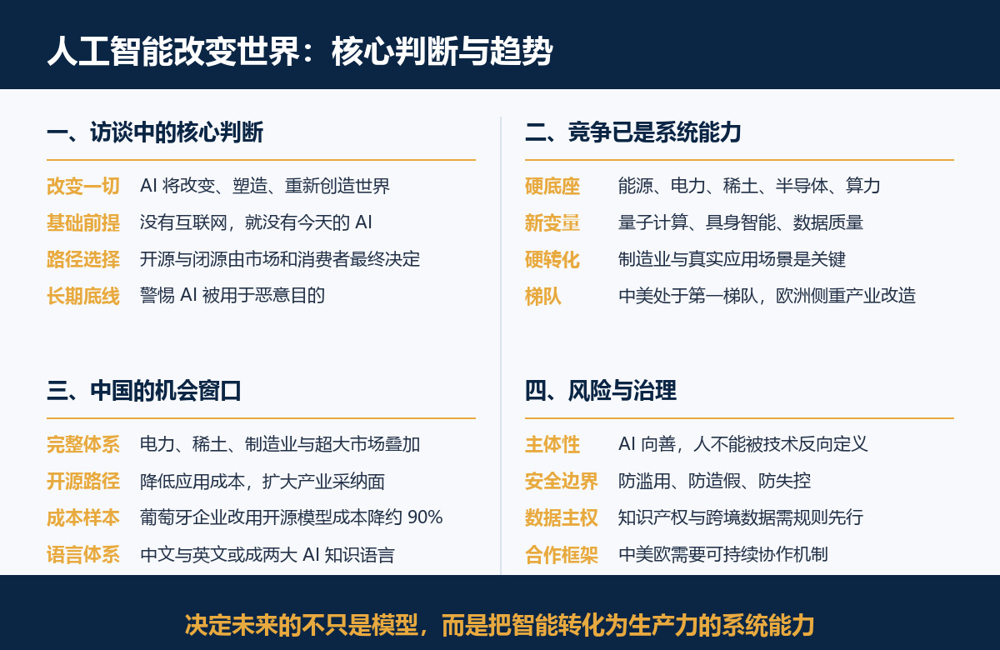

2026 年世界互联网大会乌镇峰会和全球网络峰会前后，全球化智库 CCG 副主任高志凯在多场公开访谈中提出：“人工智能将改变一切、塑造一切、重新创造一切。”他同时强调，“没有互联网就没有今天的人工智能”，全球 AI 竞争不只是模型和算法之争，而是能源、电力、数据、稀土、半导体、算力、量子计算、具身智能与制造业的综合较量。这样的判断之所以值得重视，不在于它给出了一个宏大口号，而在于它把人工智能放回了真实世界的技术底座、产业组织和国际关系之中。

一、事实层面：人工智能已经从工具变成系统变量
过去几年，公众理解人工智能的方式，主要停留在聊天、绘图、翻译和内容生成。真正的变化发生在这些表层应用背后：大模型开始接入企业流程、工业设备、科研工具和公共治理系统。它不再只是一个软件功能，而是能够重组信息流、决策流和生产流的基础能力。
高志凯把互联网视为人工智能的前提，这个判断抓住了关键。没有过去三十年积累的网络连接、数据沉淀、云计算和移动终端，就不会有今天的训练数据和分发场景。互联网把世界数字化，人工智能则开始把数字世界转化为可执行的判断和行动。
他提到全球人工智能竞争是系统能力的比拼，这一点同样贴近产业现实。模型训练需要电力和算力，芯片制造需要半导体产业链和稀有金属，模型落地需要数据治理、行业知识和制造场景。一个国家的 AI 上限，越来越取决于这些环节能否协同，而不是取决于某一个模型排行榜的名次。
在路径选择上，高志凯提出“开源必胜，闭源必败”的鲜明观点，同时强调最终由市场和消费者决定。这个说法可以看作对产业扩散规律的强调：开源降低应用门槛，闭源追求性能和商业闭环，两种路径会长期并存，但谁能让更多企业用得起、改得动、留得住数据，谁就更可能形成生态优势。葡萄牙企业转向中国开源模型后成本节省约 90% 的公开案例，说明成本结构正在成为竞争的硬指标。
二、变化之一：生产方式从“人使用工具”走向“人机共同完成”
第一重变化发生在生产现场。过去的信息化解决的是记录、传输和流程管理，人工智能开始参与判断、生成和优化。设计、客服、研发、供应链、医疗诊断、教育辅导等环节，正在从人完成全部步骤、机器提供辅助，转向人设定目标、机器生成方案、人再校验和决策。
这种变化不是简单替代岗位，而是重新划分岗位中的任务。重复的信息整理、初步代码、标准问答、常规影像筛查等环节会更早被自动化；需要跨部门协调、价值判断、责任承担和关系建立的工作，反而会更稀缺。企业如果只把人工智能当作裁员工具，往往只能获得短期成本下降；如果把人工智能当作流程重构工具，才可能获得质量、速度和客户体验的整体提升。
对产业学院、产教融合和数字化转型项目而言，这意味着课程和岗位设计都要跟着改变。学生和员工需要学会提出好问题、拆解任务、验证结果、管理数据和守住边界，而不是只学会操作某一个软件。人的价值会从“会执行”转向“会定义问题、会判断结果、会承担责任”。
三、变化之二：国家竞争从单点技术走向完整体系
第二重变化发生在国家层面。高志凯判断中国和美国处于人工智能第一梯队，欧洲更多在用人工智能改造既有产业，而不是成为技术和产业发展的引领者。这个观察提示我们，人工智能竞争正在从实验室延伸到能源系统、工业体系、资本市场和规则制定。
中国的机会在于体系完整。庞大的电力供应、稀土资源、制造业门类、消费市场和丰富的应用场景，为人工智能落地提供了其他国家难以复制的条件。尤其是在智能制造、跨境电商、智慧交通、医疗健康、农业和数字政务等场景，中国有机会形成“数据—模型—设备—反馈”的快速循环，把技术试验成本降下来，把产业扩散速度提上去。
约束同样明显。高端芯片、基础算法、高质量中文数据、科学数据集、算力利用效率、数据确权与知识产权保护，都是必须补上的课。规模大不等于能力强，场景多也不等于治理好。如果数据不能安全流通、成果不能有效确权、模型不能稳定可靠，规模优势就难以转化为长期的产业领导力。
四、变化之三：国际格局从技术竞赛走向规则和语言体系竞赛
第三重变化是国际规则。人工智能不是普通商品，它输出的是判断、内容和行动建议，天然牵涉价值观、安全、隐私和文化表达。谁定义评测标准、数据规则、内容标识、责任归属和跨境流动框架，谁就有可能在下一阶段占据制度主动。
高志凯提到，中文和英文可能成为全球人工智能训练和知识体系中最具影响力的两大语言体系。这个判断有现实基础：英文长期占据科研与互联网数据的高地，中文则拥有庞大的母语人口、完整的产业语境和快速增长的数字化内容。未来人工智能不只是翻译语言，更是在语言中组织知识、表达价值和形成推理路径。中文语料的质量、中文知识的结构化程度、中文模型对本土场景的理解深度，都会影响中国在人工智能时代的叙事能力和应用深度。
对欧洲和全球南方而言，单纯追逐最大模型未必是理性选择。更现实的路径，是用开源技术改造本国产业、保护数据主权、培养本地人才，并在医疗、教育、农业、公共服务等刚需场景中形成可负担的智能化方案。人工智能全球化如果只沿一条技术路线展开，加剧的不只是数字鸿沟，还有产业依赖和治理失衡。
五、变化之四：人的位置从使用者变成责任主体
高志凯提出警惕人工智能被用于恶意目的，并强调人工智能向善，这与技术上追求能力同等重要。深度伪造、自动化诈骗、算法偏见、模型黑箱、关键系统失控、就业结构分化，都不是遥远风险，而是已经在现实中反复出现的问题。
越强大的技术，越需要清楚的责任边界。生成内容的标识、模型训练的合法性、关键行业的审计、数据使用的授权、儿童和弱势群体的保护、重大决策的人类复核，应当从倡议走向可执行规则。人工智能向善不能只写在原则里，还要写进产品设计、业务流程和监管机制。
这也是教育和研究的长期命题。人不能被技术反向定义。教育的任务不只是培养会用人工智能的人，还要培养能判断人工智能对错、能管理人工智能风险、能在人机协作中承担最终责任的人。真正稀缺的，是提出正确问题、理解上下文、进行伦理判断和跨系统协同的能力。
六、趋势预判：未来五到十年，胜负手在六条主线
其一，竞争指标会从参数规模转向单位算力产出、能耗效率和真实任务完成率。企业与政府会更关心一个模型能解决多少业务问题、消耗多少电力、需要多少数据治理成本。绿色算力、模型压缩、端侧智能和专用小模型会加速发展。
其二，开源生态会继续扩大产业覆盖面。开源不等于没有商业模式，它更像是把基础能力变成公共底座，把竞争推向工程服务、行业数据、合规工具和场景解决方案。中国若在开源社区、开发者工具、中文语料和行业标准上持续投入，有机会形成更广泛的国际采纳。
其三，人工智能会从屏幕走向物理世界。具身智能、工业机器人、自动驾驶、智能装备和数字孪生，会把模型能力嵌入生产设备和城市基础设施。制造强国将拥有更快的试验场和更厚的产业链，服务业则会迎来新一轮人机协同改造。
其四，中文知识基础设施会成为战略资产。高质量中文语料、专业术语库、行业知识图谱、中文评测集和合规语料市场会逐渐成形。能否让中文在人工智能时代保持准确、丰富和可信赖，关系到科技传播、文化传承和国际话语权。
其五，治理会从原则宣示进入可度量阶段。内容标识、模型备案、数据分类分级、算法审计、责任追溯和跨境协作机制会不断完善。未来真正有竞争力的企业和机构，不是最会绕开规则的一方，而是最能把规则内化为可信能力的一方。
其六，合作会比脱钩更具现实意义。高志凯曾提出，中美需要建立人工智能合作框架；如果拒绝合作，真正赢家可能既不是中国也不是美国，而是人工智能本身。这个判断值得警醒：技术扩散不会等待治理共识，负面外部性也不会按国界停留。围绕安全标准、基础研究、气候与公共卫生等议题保持合作，才可能让变化朝着有利于人的方向展开。
结语
人工智能改变世界、改变人类，并不是一句遥远的预言。它已经通过电力、芯片、数据、模型、工厂、学校和治理规则，进入每一个国家的现实选择。高志凯访谈中真正值得记住的，是它把人工智能从单纯的技术话题，拉回到生产力、产业链、语言体系和人的主体性这几个更根本的层面。
对中国而言，最大的机会不是再制造一个热闹的概念，而是把完整产业体系、庞大市场、开源生态和治理能力变成可持续的智能生产力；对世界而言，最大的考验不是谁先造出更强的模型，而是能否在竞争与合作之间建立边界，让技术红利惠及更多人。
本文所引观点来自公开访谈报道，相关判断为基于公开事实的趋势研判，不构成投资、政策或就业建议。